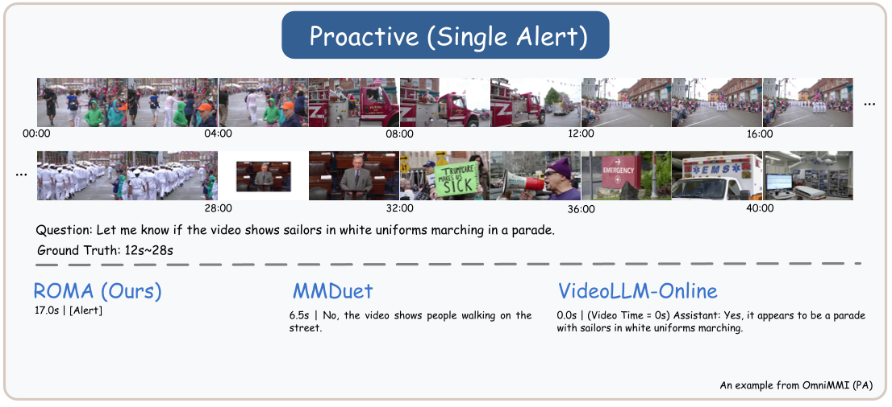
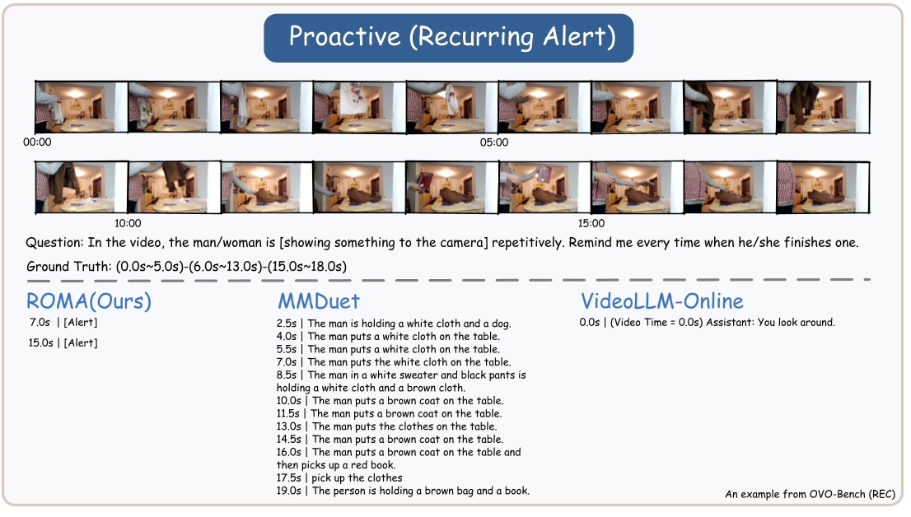
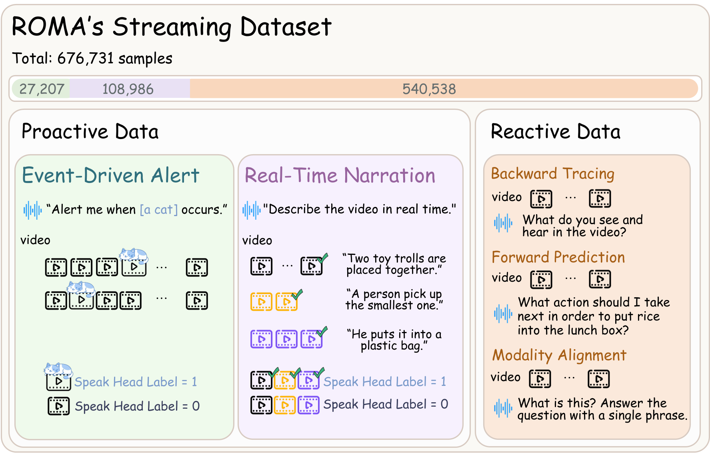

Proactive Interaction: Event Alerts
ROMA can accurately detect short-duration events and recurrences in real-time streams.


Recent Omni-multimodal Large Language Models show promise in unified audio, vision, and text modeling. However, streaming audio-video understanding remains challenging, as existing approaches suffer from disjointed capabilities: they typically exhibit incomplete modality support or lack autonomous proactive monitoring.
To address this, we present ROMA, a real-time omni-multimodal assistant for unified reactive and proactive interaction. ROMA processes continuous inputs as synchronized multimodal units, aligning dense audio with discrete video frames to handle granularity mismatches. For online decision-making, we introduce a lightweight speak head that decouples response initiation from generation to ensure precise triggering without task conflict.
We train ROMA with a curated streaming dataset and a two-stage curriculum that progressively optimizes for streaming format adaptation and proactive responsiveness. To standardize the fragmented evaluation landscape, we reorganize diverse benchmarks into a unified suite covering both proactive (alert, narration) and reactive (QA) settings. Extensive experiments across 12 benchmarks demonstrate ROMA achieves state-of-the-art performance on proactive tasks while competitive in reactive settings, validating its robustness in unified real-time omni-multimodal understanding.
ROMA unifies reactive answering and proactive timing over continuous inputs. The framework processes streaming signals as synchronized multimodal units, utilizing Chunked Time-aligned Multimodal RoPE (TMRoPE) for precise cross-modal alignment. By integrating a dedicated Speak Head, the model achieves robust temporal grounding and autonomous interaction control.
Key Mechanisms:
We constructed a comprehensive streaming dataset covering Proactive (Alert, Narration) and Reactive (QA) tasks, totally over 676K samples.
ROMA can accurately detect short-duration events and recurrences in real-time streams.
Compared with baseline VideoLLMs, ROMA provides more succinct and time-aligned summaries of events.

In reactive QA settings, ROMA demonstrates robust omni-multimodal capabilities by directly processing audio queries, maintaining strong context understanding without relying on text transcription.

Table: Performance on QVHighlights & Charades-STA.
Table: Single & Recurring Alert Performance.
Table: Streaming Narration on YouCook2 & OVO-Bench (SSR).
Table: Reactive QA on OVO-Bench (Real-time Visual Perception & Backward Tracing).
Table: Performance on StreamingBench.
Table: Full-Modality QA on Video-MME & EgoSchema.
@article{roma2025,
title={ROMA: Real-time Omni-Multimodal Assistant with Interactive Streaming Understanding},
author={Anonymous Authors},
journal={ACL Submission},
year={2025}
}